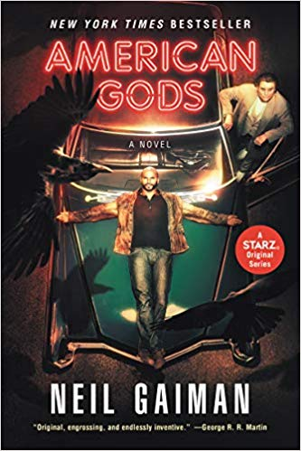

Біографія: Locked behind bars for three years, Shadow did his time, quietly waiting for the day when he could return to Eagle Point, Indiana. A man no longer scared of what tomorrow might bring, all he wanted was to be with Laura, the wife he deeply loved, and start a new life. But just days before his release, Laura and Shadow’s best friend are killed in an accident. With his life in pieces and nothing to keep him tethered, Shadow accepts a job from a beguiling stranger he meets on the way home, an enigmatic man who calls himself Mr. Wednesday. A trickster and a rogue, Wednesday seems to know more about Shadow than Shadow does himself.